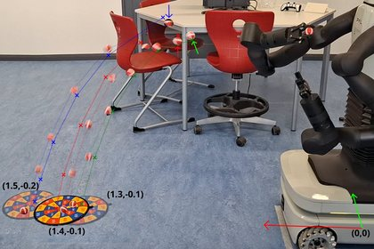

Compliance makes
the difference
We develop compliant robotic hands and arms, teleoperate humanoid robots in greenhouses, classrooms and care settings, and teach them dynamic skills from human demonstration.
Explore our researchLet the hardware do the heavy lifting
The SIRo Lab builds robotic hands and arms with real springs, real elasticity and variable stiffness: not mimicked, not pneumatic, not soft in the silicone sense, but mechanically compliant by mechanism design. From nonlinear torsional springs to Bowden-cable stiffness modulation, we develop the actuation principles that make compliance practical.
Good hardware simplifies control, but it does not replace it. We design variable-stiffness hands with programmable fingertip compliance, where the passive deformation of the material itself becomes part of the computation. We teach our robots dynamic skills through movement primitives learned from human demonstration, and we equip a TIAGo Pro humanoid with these hands to bring the whole system into applied settings: greenhouse harvesting, ambulatory care and university teaching.
As a university of applied sciences we work pragmatically, and the constraint is a design tool rather than an excuse. Hardware that shifts complexity away from control tends to outperform elaborate systems that fight their own mechanics, and it also tends to be affordable enough that students can build it. The boundary between basic and applied research stays fluid here: a question about stiffness perception turns into a hand design, and a care project raises fundamental questions about telemanipulation.
All of it points one way. A hand whose fingers yield, an arm whose joints are coupled through springs, and a way of commanding both that feels like being there: these are parts of an elastic humanoid system. We are not announcing one. We are working out, part by part, what such a system would have to be made of, and TIAGo Pro carries the parts in the meantime.
We are a small team at Berliner Hochschule für Technik, embedded in the Bachelor’s programme for Humanoid Robotics and part of the Haus der Robotik. We simulate, we prototype, we test, but the goal is always hardware that works outside the lab.

Four questions, and the machines they produce
We do not start from a robot and look for something to do with it. We start from a question, and the platform follows from it. All four questions point in the same direction: an elastic humanoid system, built from parts whose compliance is mechanical rather than computed.
“Kapieren vor Kopieren”
“Comprehend before you copy” · Markus Grebenstein, designer of the Awiwi Hand of the DLR Hand Arm System and Hannes Höppner’s former supervisor at DLR
Biology is where the questions come from, not where the answers are copied. The human hand is a powerful starting point and a poor blueprint. We study principles such as variable stiffness, antagonistic actuation and tendon-driven motion, and then decide, one at a time, what is worth translating into a mechanism and what is not. Understanding comes before imitation, which is why each of the four questions below is a question and not a specification.
Mechanical Intelligence
How much of the control can the hardware itself take over?
When a hand meets something it has not been told about, an expensive sensor and an actuator can work out a response, or a spring can simply yield. Springs conform to objects and react to their surroundings without being asked to. We build hands that use this: variable stiffness from Bowden cables, and fingertips whose passive deformation is designed so that grasping behaviour is shaped before any controller runs.
- Variable stiffness from Bowden cables (VSB)
- Programmable fingertip compliance
- Morphological computation
- Grasping without explicit force control
Stiffness Shaping
What becomes possible when elasticity spans more than one joint?
A spring across two joints does what two separate springs cannot. It transfers energy between the joints, and it lets the stiffness ellipse at the end-effector be set in shape, size and orientation. An arm can then follow a key into a lock, or stay stiff across the axis of a nail so the hammer does not slip. Our open questions are which couplings belong where, and where a series-elastic joint is enough instead of a variable-stiffness one.
- Multiarticular and biarticular couplings
- Cartesian stiffness ellipses: shape, size, orientation
- Energy transfer between joints
- Impact behaviour and directed compliance
Movement Primitives
How does a robot learn movements from a person, and build tasks from them?
A throw is decided at the instant of release, not along the trajectory, so a primitive has to condition on position and velocity together. We build on DMP, VMP and ProDMP to learn such primitives from human demonstration and collect them into a catalogue. Work on composition has begun and has no results yet. The idea is to let language models assemble a task from the primitives in the catalogue, so that a vocabulary of movement becomes a language of manipulation.
- Velocity-aware via-point primitives (V2MP)
- Learning from demonstration
- A library of movement primitives
- Task composition through language models, work begun
Immersive Teleoperation
How does someone with no training in operating a humanoid control it with ease, and feel what the robot feels?
A carer, a greenhouse grower or a lecturer in agile project management should be able to put a humanoid to work without being able to programme it. We are following two answers at once. One raises immersion as far as it will go: the input station returns what the robot feels, so that contact arrives at the operator as contact rather than as a number on a screen. The other keeps the device deliberately simple and does without haptic feedback, aiming instead at a low barrier to use. That device is nearly finished and not yet in use. Which of the two a given setting needs is itself the question.
- Visuo-haptic input station (VHIS)
- Haptic feedback instead of pose streaming
- Spatial configuration and workspace optimisation
- Operation by non-experts
Hardware we can build and maintain ourselves
Understanding a mechanism well enough to build it, repair it and change it is part of the research question, not a side effect of it. We therefore make as much of our hardware ourselves as we reasonably can. Three of these four platforms are built in the lab. TIAGo Pro is the exception we bought, and the multiarticular VSA arm is the limb that would eventually replace what we are currently borrowing.

SIRo Soft Hand
Our oldest platform: a tendon-driven anthropomorphic hand with variable stiffness through Bowden-cable-based actuation (VSB) and programmable fingertip compliance. Three hands exist, the right one nearly finished. It is built to replace TIAGo Pro’s last two wrist axes, and that integration is the next step, planned for this year. The passive deformation of its soft fingertips is engineered to shape grasping behaviour, so part of the computation happens in the hardware.

TIAGo Pro
The one platform we did not build. Bought, instrumented, and the robot everything else is built around. What already runs on it, and what does not, is in the section below.

Visuo-Haptic Input Station (VHIS)
The operator side of tele.interaction: a dual-arm cobot station meant to command TIAGo Pro through the operator’s own arm movements, with contact conveyed back as contact. Published so far is the method for placing the cobots around the operator, using workspace modelling, volumetric intersection analysis and ergonomic metrics. Commanding a robot arm and returning haptic feedback have been shown internally.

Multiarticular VSA Arm
A robot arm with variable stiffness and biarticular spring couplings, transferring the principle of muscles that span two joints into engineered mechanisms. It targets dynamic tasks such as throwing and catching. Built and measured several times; the measurements are not yet evaluated.
How the four questions meet on one robot
TIAGo Pro is the one platform we did not build. We bought it and are making it the place where the other three come together. Each of its arms has seven degrees of freedom, and our hand brings a wrist of its own, because the variable stiffness has to act there and because the motors driving it would not otherwise fit into the forearm. The plan is therefore to take the last two axes off the robot and mount the hand, with its own wrist, in their place. One of the three is already there: movement primitives are learned on this robot, with a 7-DoF arm and the standard gripper.

Visuo-Haptic Input Station
Built to command the robot and return what it feels

Movement Primitives
Learned on the robot, from human demonstration

SIRo Soft Hand
Built to replace the last two wrist axes, mounting planned
TIAGo Pro
the robot the other three run on


The tags say how far the work has come, not whether a system is deployed: in the greenhouse it is student teams with hands they built themselves, in care and teaching the projects are under way. The application images are AI visualisations of what these settings could look like, not photographs of work done. Instrument reprocessing is the exception in this picture: there the hand works on a separate arm, not on TIAGo Pro.
And the limb that comes next
TIAGo Pro is a stand-in. Its arms are good ones, but they are not ours and they are not elastic, and elasticity is the property this whole body of work is about. The multiarticular VSA arm is the answer to that: the arm an elastic humanoid would need, worked out on a test stand before it carries anything. Hand and arm are two limbs of the same machine, which is why all of this points towards an elastic humanoid system rather than towards a better gripper.
Externally funded projects
Funding and research questions are not the same thing. One project can carry several questions at once, and not every question has a project behind it yet. Listed here are the projects with external funding, with the people working in each.
Third-party funded work, with funding body and running time.
tele.interaction
The core infrastructure project: collaborative robot arms and a mobile humanoid with elastic joints for research on soft manipulation and visuo-haptic teleoperation. It covers three domains, greenhouse harvesting, university teaching and ambulatory care, and funds the TIAGo Pro platform and the VHIS.
Steffen Puhlmann · Ranjit Santhanaraman · Rafid Abyaad
Ranjit Santhanaraman, Felix Schlüter
APPL-FM
Berlin Initiative for Applied Foundation Model Research, a BHT-wide programme on foundation models across robotics, quantitative biology and predictive medicine. Our contribution is data-efficient learning from demonstration for dexterous manipulation with soft robotic hands. The programme also supports conference participation and the groundwork for a possible DFG Research Unit.
Robo4Care
Relieving care workers on two fronts: robotic assistance for fine-motor tasks such as medication preparation, and wearable exoskeletons for physically demanding patient transfers. TIAGo Pro with compliant hands is to take on the manipulation, exoskeletons the ergonomic strain. With ASH Berlin, HTW Berlin, Fraunhofer IZM/IPK, Johannesstift Diakonie and IFA/DGUV.
SIRo-AEMP
Validating the lab’s hand research in surgical instrument reprocessing. A SIRo Soft Hand on a robot arm, guided by camera, is to recognise contaminated instruments, open scissors and retractors and place them safely into sterilisation containers. Industry partner is enamentis GmbH; the project also prepares a possible spin-off from BHT.
Steffen Puhlmann · Adrian Sieler
Steffen Puhlmann, Adrian Sieler
Research and teaching feed each other
At the SIRo Lab, students work on the same hardware researchers use. The lab is embedded in BHT’s B.Sc. Humanoid Robotics, one of the few programmes in Germany dedicated to humanoid robotics, and our research platforms are available to students from the second semester onwards.
The Robotics Project challenges make this concrete: students design soft robotic hands and test them in scenarios taken directly from our research, including greenhouse harvesting, everyday manipulation and delicate object handling. The tasks of the 2024 Catch-Up Challenge are the same ones we address in the DFG tele.interaction project.
TIAGo Pro also appears in the classroom, as a scrum master in agile exercises and as a participant in the ball pointing game. The robot is part of the course, not a demonstration behind glass.
The traffic runs both ways, and that is the point. Open research questions become project topics, theses and internships, so students work on something nobody has answered yet rather than on an exercise with a known solution. What comes back is not only a report. Student prototypes that hold up become lab platforms, and results from theses turn into the groundwork of the next paper. A lab of this size can only cover four research questions at once because students carry part of them.
Where topics come from
Every thesis and internship topic is cut out of one of the four research questions, which means the answer is not known in advance.
Real Challenges, Real Hardware
Student challenges mirror actual research tasks: greenhouse automation, manipulation and teleoperation.
Theses and internships
Bachelor’s and Master’s theses and internships take on parts of the four research questions, and the results feed back into the lab. How to ask →
Results that travel
Prototypes that hold up become lab platforms, and findings from student work have changed what the lab does next.
The people behind the platforms
Each researcher works on one of the four questions above, and each person’s page starts with that question rather than with a curriculum vitae.
Compliant hands, teleoperation stations, dynamic skill libraries: every platform in the lab is built and maintained by someone on this list. Follow a name for their research, projects and publications.


Opening the Haus der Robotik
TIAGo Pro cutting the ribbon at the opening of BHT’s Haus der Robotik in July 2025.
Learn moreSecond floor, where the hands are
The SIRo Lab is one of three research laboratories in BHT’s Haus der Robotik on Kurfürstenstraße, which opened in July 2025. The building is laid out roughly like the robots inside it: walking and the workshop on the ground floor, manipulation in the middle, cognition at the top. We are on the second floor, which is where the hands are, and that is not a coincidence.
The other two floors are occupied by the Neurorobotics Research Laboratory, which works on morphologies and distributed neural control for autonomous behaviour, and the Compliant Robotics Laboratory, which works on inherent compliance through pneumatic and artificial muscles, and on walking. Between the three floors the house covers neurorobotics and cognition, compliant locomotion, and soft dexterous manipulation, teleoperation and physical human-robot interaction.
What that is worth in practice is equipment none of the three could justify alone: humanoid and mobile platforms including TIAGo Pro and a bipedal Digit, collaborative manipulators, our own visuo-haptic interfaces, and a workshop with laser cutting, milling and several printing processes on the ground floor. A hand designed upstairs in the morning can be printed downstairs in the afternoon.

Content reviewed with the lab on 18 September 2026. Statements about what exists, what has been shown and what is planned refer to that date.